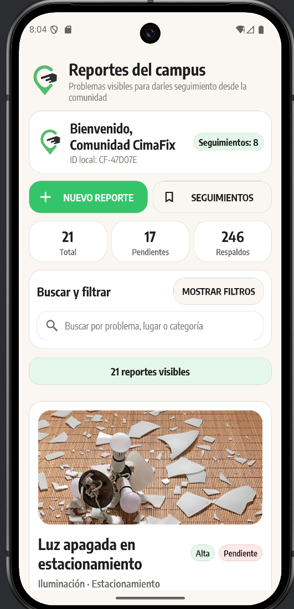
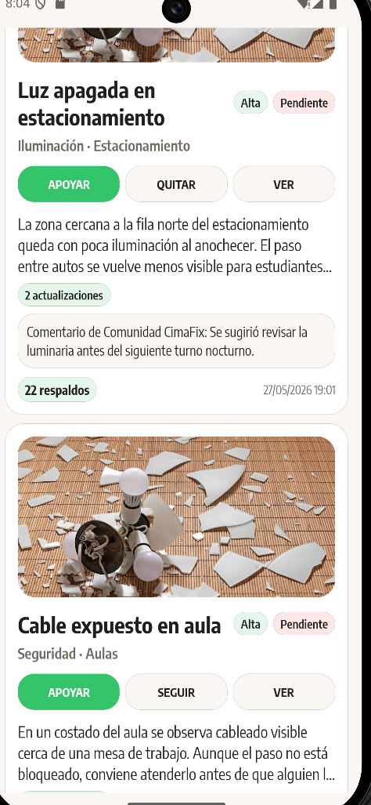

← Todos los proyectos
Proyecto / 06
CimaFix
Una comunidad que cuida su campus
Aplicación Android para reportar problemas visibles en el campus, aportar evidencia y seguir el estado de cada reporte.

01 / Propósito
Una idea llevada a la práctica.
Proyecto de aplicación móvil.
Áreas y tecnologíasKotlin · Android
Esta ficha presenta el alcance documentado y material visual seleccionado. El código de desarrollo y los datos privados permanecen fuera de esta vitrina.
02 / Lo que hace
Funciones principales
- Reportes con categoría, ubicación, urgencia y fotografía.
- Apoyo comunitario, comentarios y seguimiento de reportes.
- Filtros y estados para revisar pendientes y casos concluidos.
03 / Vista del proyecto
Así toma forma.
Capturas del prototipo Android, mayo de 2026. Los reportes visibles son datos de demostración.

04 / Explorar